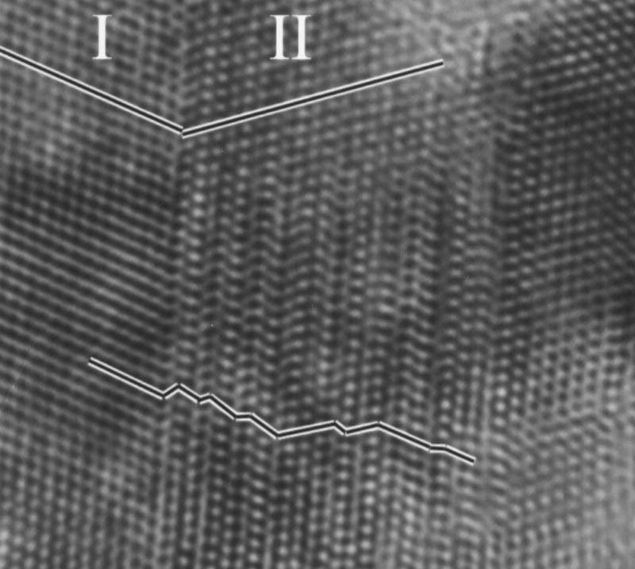
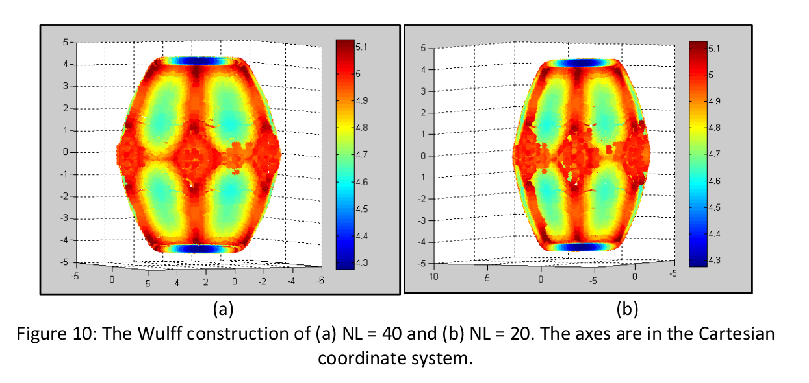
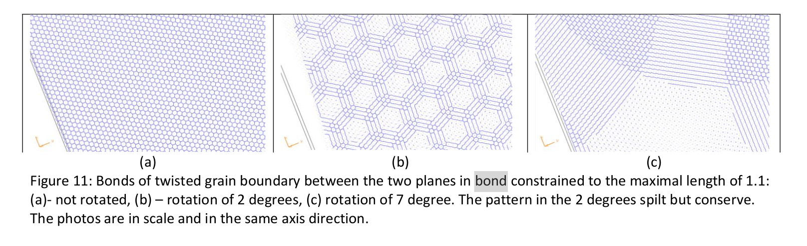

A grain boundary in a crystalline structure is an abrupt change of direction in the lattice. It can also be thought of as an interface area between two grains of the crystal (i.e. crystallites) in a polycrystalline solid.
Using high-resolution transmission electron microscopy (HRTEM), researchers obtained structure images of a crystal1, which clearly shows the grain boundaries between two sub-lattices in the crystal, each with a different crystallographic direction:

In order to simulate a grain boundary we need first to understand two things - which conditions are necessary to the creation of grain boundaries, and how to calculate a crystal's structure based on these conditions. One method to calculate a crystal's shape is using the Wulff construction. The construction relies on two theorems:
Together these allow us to find the crystal's shape. When considering a polycrystalline solid we must consider another source of surface energy - the interaction between two parts of crystal, i.e. the additional energy caused due to the grain boundary. By using the symbolic math features of Matlab (for example) one can construct the crystal's shape.
An example of just such process can be found in Lilach Saltoun's project for Joan Adler4: 
Where NL is the number of particles in the crystal.
By using this Lilach also obtains an image of two planes of the crystals and the grain boundary between them: 